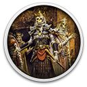
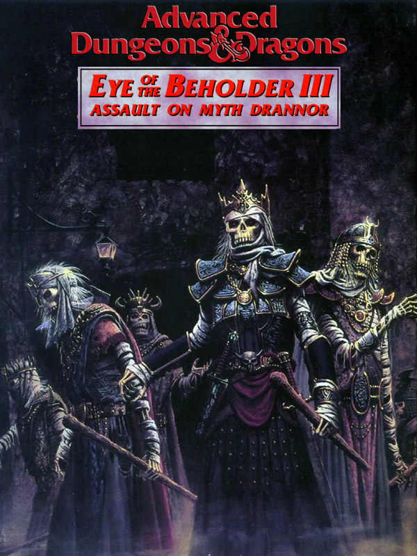

 Eye of the Beholder III: Assault on Myth Drannor
Detalhes
|  | |
| Tempo de jogo | Não Jogado |
| Última Atividade | Nunca |
| Adicionado | 11/02/2025 13:17:39 |
| Modificado | 11/02/2025 13:24:38 |
| Status de Conclusão | Not Played |
| Biblioteca | Gog |
| Fonte | GOG |
| Plataforma | PC (Windows) |
| Data de Lançamento | 31/12/1993 |
| Pontuação da Comunidade | 71 |
| Avaliação da crítica | |
| Pontuação do Usuário | |
| Gênero | Real Time Strategy (RTS) Role-playing (RPG) |
| Desenvolvedor | SSI (Strategic Simulations, Inc.) |
| Editor | SSI (Strategic Simulations, Inc.) |
| Funções | Single Player |
| Links | Wikipedia Steam Twitch GOG |
| Tag | |
Descrição
The Forgotten Realms world of Dungeons & Dragons has been home to many a hero and imagination since its publication, producing adventures and stories to be retold and enjoyed for years to come. The Forgotten Realms Archive - Collection One allows you to journey through one such set of adventures: the Eye of the Beholder trilogy, a set of first-person, real-time role-playing games.
 Eye of the Beholder
A new evil is plaguing the city of Waterdeep, stalking the streets and preying on its citizens. Though initially thought to come from afar, this great evil, known only as Xanathar, instead resides within Waterdeep and, if not stopped, threatens to overwhelm the city. The Lords of Waterdeep believe that the evil lurks in the sewers below and have commissioned a party of adventurers to investigate and foil this nefarious plot. Granted full rights of marque and ownership of any treasure, artifacts or valuables you find on your quest, you must venture into the chasms, discover the nature of this evil and destroy it by any means necessary.
Eye of the Beholder
A new evil is plaguing the city of Waterdeep, stalking the streets and preying on its citizens. Though initially thought to come from afar, this great evil, known only as Xanathar, instead resides within Waterdeep and, if not stopped, threatens to overwhelm the city. The Lords of Waterdeep believe that the evil lurks in the sewers below and have commissioned a party of adventurers to investigate and foil this nefarious plot. Granted full rights of marque and ownership of any treasure, artifacts or valuables you find on your quest, you must venture into the chasms, discover the nature of this evil and destroy it by any means necessary.
 Eye of the Beholder II: The Legend of Darkmoon
Following your quest in the sewers beneath, you and your party are recovering with Waterdeep’s finest healers, when a letter arrives from Khelben Blackstaff, mystic advisor to the Lords of Waterdeep. Trouble is brewing in the Northern and Western regions, and he has tasked you with exploring the land and investigating these incidents. Although nothing has been confirmed, renowned but troublesome archaeologist, Wently Kelso believes the disturbances are related to an evil uprising and the presence of a powerful ancient artefact. These troubles could, of course, simply be the work of unruly bandits, but since Kelso’s previous findings in the sewers of Waterdeep proved true, one would be wise not to easily dismiss his opinion on the matter. Therefore, you should exercise greater care and vigilance as you begin your next adventure.
Eye of the Beholder II: The Legend of Darkmoon
Following your quest in the sewers beneath, you and your party are recovering with Waterdeep’s finest healers, when a letter arrives from Khelben Blackstaff, mystic advisor to the Lords of Waterdeep. Trouble is brewing in the Northern and Western regions, and he has tasked you with exploring the land and investigating these incidents. Although nothing has been confirmed, renowned but troublesome archaeologist, Wently Kelso believes the disturbances are related to an evil uprising and the presence of a powerful ancient artefact. These troubles could, of course, simply be the work of unruly bandits, but since Kelso’s previous findings in the sewers of Waterdeep proved true, one would be wise not to easily dismiss his opinion on the matter. Therefore, you should exercise greater care and vigilance as you begin your next adventure.
 Eye of the Beholder III: Assault on Myth Drannor
Having rid the sewers of Waterdeep and the dreaded Temple Darkmoon of the evil forces within, you and your companions are surely deserving of a strong drink, good food and a warm fire. And so, your first port of call is to the nearest tavern, where you slop ale all over yourself and engage in jovial antics as you regale your adventures to your captivated listeners and admirers. However, in the midst of your retelling, the tavern door is thrust open by a hooded figure, whose eyes scan the crowd before locking on you and your party. Approaching you, he quickly introduces himself and explains his reasons for disturbing the festivities; his master wishes you to free the ruined city of Myth Drannor from the clutches of a Lich and restore it to its former glory. Looks like your adventures aren’t over just yet…
Eye of the Beholder III: Assault on Myth Drannor
Having rid the sewers of Waterdeep and the dreaded Temple Darkmoon of the evil forces within, you and your companions are surely deserving of a strong drink, good food and a warm fire. And so, your first port of call is to the nearest tavern, where you slop ale all over yourself and engage in jovial antics as you regale your adventures to your captivated listeners and admirers. However, in the midst of your retelling, the tavern door is thrust open by a hooded figure, whose eyes scan the crowd before locking on you and your party. Approaching you, he quickly introduces himself and explains his reasons for disturbing the festivities; his master wishes you to free the ruined city of Myth Drannor from the clutches of a Lich and restore it to its former glory. Looks like your adventures aren’t over just yet…
With an original story set in the Forgotten Realms universe, the Eye of the Beholder trilogy is based on the Advanced Dungeon & Dragons 2nd Edition’s game rules. Bringing the immersion, wonder and epicness of a D&D campaign to the PC, the Eye of the Beholder is a genre-defining and beloved series for RPG and Dungeons & Dragons fans alike.
Eye of the Beholder
A new evil is plaguing the city of Waterdeep, stalking the streets and preying on its citizens. Though initially thought to come from afar, this great evil, known only as Xanathar, instead resides within Waterdeep and, if not stopped, threatens to overwhelm the city. The Lords of Waterdeep believe that the evil lurks in the sewers below and have commissioned a party of adventurers to investigate and foil this nefarious plot. Granted full rights of marque and ownership of any treasure, artifacts or valuables you find on your quest, you must venture into the chasms, discover the nature of this evil and destroy it by any means necessary.
Eye of the Beholder II: The Legend of Darkmoon
Following your quest in the sewers beneath, you and your party are recovering with Waterdeep’s finest healers, when a letter arrives from Khelben Blackstaff, mystic advisor to the Lords of Waterdeep. Trouble is brewing in the Northern and Western regions, and he has tasked you with exploring the land and investigating these incidents. Although nothing has been confirmed, renowned but troublesome archaeologist, Wently Kelso believes the disturbances are related to an evil uprising and the presence of a powerful ancient artefact. These troubles could, of course, simply be the work of unruly bandits, but since Kelso’s previous findings in the sewers of Waterdeep proved true, one would be wise not to easily dismiss his opinion on the matter. Therefore, you should exercise greater care and vigilance as you begin your next adventure.
Eye of the Beholder III: Assault on Myth Drannor
Having rid the sewers of Waterdeep and the dreaded Temple Darkmoon of the evil forces within, you and your companions are surely deserving of a strong drink, good food and a warm fire. And so, your first port of call is to the nearest tavern, where you slop ale all over yourself and engage in jovial antics as you regale your adventures to your captivated listeners and admirers. However, in the midst of your retelling, the tavern door is thrust open by a hooded figure, whose eyes scan the crowd before locking on you and your party. Approaching you, he quickly introduces himself and explains his reasons for disturbing the festivities; his master wishes you to free the ruined city of Myth Drannor from the clutches of a Lich and restore it to its former glory. Looks like your adventures aren’t over just yet…
With an original story set in the Forgotten Realms universe, the Eye of the Beholder trilogy is based on the Advanced Dungeon & Dragons 2nd Edition’s game rules. Bringing the immersion, wonder and epicness of a D&D campaign to the PC, the Eye of the Beholder is a genre-defining and beloved series for RPG and Dungeons & Dragons fans alike.